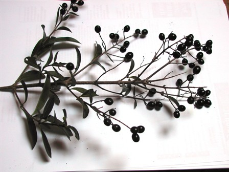
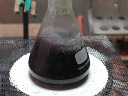
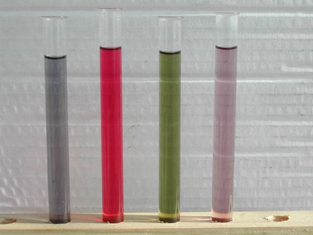

E' venuto il momento di mettere alla prova quell'insolito indicatore che possiamo ricavare dalle bacche del ligustro, di cui parlavo nel post precedente.
Purtroppo non sono riuscito in alcun modo a reperire notizie su questo colorante (ma importante la nota di mpatrick nei "commenti") che chiamiamo "ligulina" o "ligustrina"; ho trovato accenni in antichi tomi di farmacia di cui non val la pena citare alcunchè, se non che il ligustro può essere considerato una vecchia pianta officinale (discretamente velenosa) e poco usata anche in tempi passati, quando la farmacopea si rivolgeva con molta maggior simpatia a tutto il regno vegetale.
Andiamo allora a verificare le proprietà cromatiche di questo selvatico indicatore a seconda dell'ambiente acido-base.
Ho scelto un rametto ben fornito di bacche belle mature e ne ho schiacciate una decina in 100 ml di acqua distillata, portando poi ad ebollizione per qualche minuto.

Il colorante si scioglie bene in acqua ed anche a bassa concentrazione la colora in viola intenso, quasi nero.

Ho poi diluito l'estratto ottenuto in quattro provette, come nell'immagine (partendo da destra):
- provetta con l'indicatore molto diluito in acqua distillata
- provetta come sopra e leggermente basificata con NaOH
- provetta come sopra e leggermente acidificata con H2SO4
- provetta con l'indicatore diluito in normale acqua di rubinetto

Le proprietà indicatrici della ligulina sono evidentissime, andando da un violetto pallido a pH 7, ad un verde erba in ambiente alcalino e ad un bel rosso deciso in ambiente acido.
La variazione è netta ed il range di pH direi che è perfettamente sovrapponibile a quello del più noto tornasole: sotto il sei la soluzione è rossa e sopra l'otto è verde.
E la quarta provetta? Quella è rimasta neutra, ma volevo verificare la sensibilità di questa sostanza agli ioni calcio, cosa che si è puntualmente realizzata.
Se l'indicatore viene sciolto in acqua calcarea (nella mia zona la durezza dell'acqua è circa 20-30° F) l'indicatore assume immediatamente una colorazione blù sporco, come si può vedere dalla foto; la sensibilità evidentemente è abbastanza elevata e ritengo che con opportune comparazioni colorimetriche potrebbe (dico potrebbe...) essere un singolare test per la durezza dell'acqua.
Idea che mi viene in mente in questo modo, ma che è naturalmente tutta da verificare.
Ho provato la reazione con il magnesio al posto del calcio ed è risultata negativa.
Mi ero proposto quanto prima di saggiare la reazione con gli altri alcalino-terrosi, ovvero il bario e lo stronzio, a vedere se il viraggio verso il blù è specifico per il calcio o si estende anche a questi metalli.
[EDIT]: ora ho provato, aggiungendo all'indicatore in ambiente neutro qualche goccia di sol. diluita rispettivamente di cloruro di bario e bromuro di stronzio.
Esito completamente negativo: la ligulina è sensibile selettivamente al calcio.
4 commenti